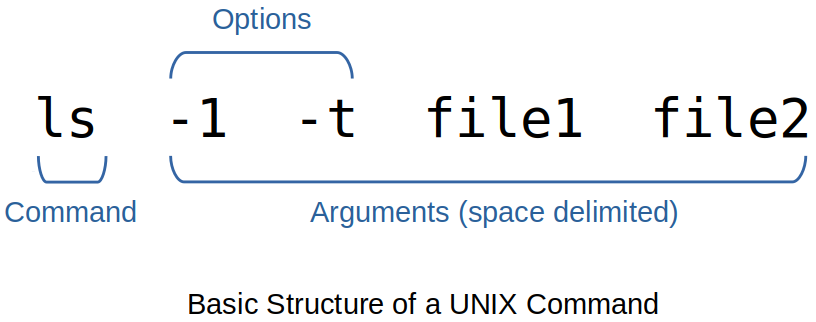

Home | Projects | Notes > Unix/Linux > UNIX Commands
UNIX Commands
Command Basics
UNIX commands are mainly written in C, but also supports programs written in any language.
UNIX is case-sensitive to the filenames. (Most commands are in lowercase.)
UNIX does NOT require an extension for command names, but it can be used either for convenience or for conforming to an application requirement.
e.g.,
.cand.javaextensions are required for C and Java programs, repectively, to be compiled.e.g., shell and Perl scripts don't need the
.shorplextensions, but we often provide them for easier identification.
Unlike other commands, shell is invoked the moment you log in and runs until you log out.
External Commands
Commands that exist on disk as separate files.
Internal Commands
Commands that are built into the shell executable.
e.g.,
cdcommand (There's no file in the system namedcd.)
PATH Variable
PATHis a variable that shell maintains in its own environment (thus a.k.a. an environment variable).PATHis set to a list of colon-delimited directories; making it a string as a whole.xxxxxxxxxx21$ echo $PATH2/bin:/usr/bin:usr/ucb:/usr/spg4/bin:.There are five directories in this list separated by a delimiter, the colon. (The last one,
., represents the current directory.)When a command is entered, the shell looks in each of these directories to locate the file with that name.
When the
netscapecommand is not available in any of these directories:xxxxxxxxxx21$ netscape2netscape: command not foundIn case
netscapeexists somewhere else on the system, try:adding that directory to
PATHusing a pathname (like
/usr/local/bin/netscapeif the command is located in/usr/local/bin).switching to the directory where the executable is located and executing it from there.
To execute the program in the current directory, invoke it with
./at front.xxxxxxxxxx11$ ./myprogram
Commands to Locate a Command
which
whichcommand tells you the directory inPATHthat contains the command:xxxxxxxxxx21$ which grep2/usr/bin/grepAfter searching the directories of
PATHin sequence,whichabandons its search the moment it locates a file namedgrep.grep (global regular expression printer) searches for patterns in a file.
whichis not the required by POSIX.
whereis
Unlike
which,whereissearches a larger list thanPATH.xxxxxxxxxx21whereis grep2grep: /usr/bin/grep /usr/share/man/man1/grep.1.gz /usr/share/info/grep.info.gzwhereiscommand is usable in BSD-based UNIX systems.whereisis not the required by POSIX.
type
typedoesn't display files but only points to the version that will be executed.xxxxxxxxxx21$ type echo2echo is a shell builtinRemember! Not all UNIX commands are files; some are built into the shell.
whichandwhereisdo not consider this possibility.xxxxxxxxxx21$ which echo2/usr/bin/echoThis file is not the
echothat will be executed but it is the built-inechocommand that will be executed in reality.typegives a more authentic information whereaswhichgives only the half true information.
Command Structure
UNIX command line: command + (space delmited) areguments
Even if a lot of whitespace (space, tab, new line, form feed) are provided in the command line, the shell ensures that arguments are separated by a single space before the command is run.

An option begins with a hyphen '-', and changes a command's default behavior.
e.g.,
lsshows only the filenames, the-land-toptions show their attributes as well.Never create a filename that begins with a hyphen as a command might treat it as one of its options.
Linux offers
--[word]type options as well as all of the UNIX-type options.e.g.,
ls --classifyis equivalent tols -F.
The filename will generally be a command's last argument, after all options. However, this is not always true; some options use filenames as their own arguments.
Flexibility of Command Usage
In UNIX, you can specify multiple commands in one line by using
;(a metacharacter) as the delimiter of commands.xxxxxxxxxx11ls ; cat file1On the other hand, a command line can be split into multiple physical lines.
xxxxxxxxxx61$ echo "This is2> a three-line3> text message"4This is5a three-line6text messageThe appearance of
>(or?) indictes that the command line is not complete (e.g., the absence of a matching quote or parenthesis). If you can't fix it, just interrupt the command line with[Ctrl-c]or[Ctrl-u].In C shell command line will look a little different:
xxxxxxxxxx61% echo "This is\ (Primary prompt in C shell is '%')2? a three-line\ (Secondary prompt is often '?')3? text message"4This is5a three-line6text messageCommand output need not always be seen on the terminal.
xxxxxxxxxx21who > userlist.txt (Output saved in 'userlist.txt')2who | wc -l ('who' piped to 'wc -l')
man: On-Line Help
man, short for manual, is called the man documentation which remains the most complete and authoritative guide to the UNIX system.xxxxxxxxxx11$ man ls (To view the manual page of 'ls')The output is sent to a pager program, which displays the contents of a file one page (screen) at a time.
manis always preconfigured to be used with a specific pager.more, Berkeley's pager, a superior alternative to the original AT&Tpgcommand (now obsolete), which is now available universally.less, the standard pager used on Linux systems, but also available for UNIX platforms.
On the
manpage, the key you press can be considered to be one ofman's (rather, the pager's) internal commands which doesn't show up on the screen.e.g., To quit the pager, and ultimately
man, pressq.
manpage also includes important system files and system calls used by the commands.
Navigation and Search
The navigation commands may vary across the UNIX implementations.
e.g.,
forspacebaradvances by one scree,bmoves back one screen.
Search
e.g.,
/filename[Enter] calls up the page containing the wordfilename. (Pressnto find next.)
Further Help with man -k and man -f
POSIX requires
manto support only one option-k.Most UNIX systems also offer the
approposcommand that emulatesman -k.
man -ksearches the NAME section of all man pages that contain the keyword.xxxxxxxxxx61$ man -k cron2anacrontab (5) - configuration file for anacron3anacron (8) - runs commands periodically4cron (8) - daemon to execute scheduled commands (Vixie Cron)5crontab (1) - maintain crontab files for individual users (Vixie Cron)6crontab (5) - tables for driving cronxxxxxxxxxx51$ man -k chmod2chmod (1) - change file mode bits3chmod (2) - change permissions of a file4fchmod (2) - change permissions of a file5fchmodat (2) - change permissions of a file
The man Documentation
Generally,
mandocumentation includes following eight sections.

Examples
xxxxxxxxxx21man 2 read (Look up the 'read' system call)2man -s2 read (Solaris uses the '-s' option)xxxxxxxxxx31man passwd (Look up Section 1 only)2man 4 passwd (Look up Section 4)3man -s4 passwd (Solaris uses the '-s' option)
Understanding a man Page
A
manpage is divided into a number of compulsory and optional sections.Although not every command has all sections, the first three (NAME, SYNOPSIS and DESCRIPTION) are generally seen in all
manpages.
NAME provides one-line introduction to the command.
SYNOPSIS shows the syntax used by the command.
e.g.,
mycmd [ -a | -b | -A ] [ -kj ] [ file ... ]Bracket ([]) means optional; otherwise, required. So
mycmdcan be used by itself without arguments.Ellipsis (...) implies that there can be more. So
mycmdcan be used with more than one filename as argument.Pipe (|) delimited options mean that only one on the either side of the pipe can be used. So, only one of the options
-a,-band-A, can be used.
DESCRIPTION (often the largest section) presents a detailed description.
OPTIONS lists all options used by the command.
EXIT STATUS lists possible error conditions and their numeric representation.
This is important when writing shell scripts and C programs in order to determine the actual cause of termination of a program.
Using man to Understand man
manitself is a UNIX command so it can be viewed in it's own documentation.The variable
PAGERcan be chosen.xxxxxxxxxx21$ PAGER=less ; export PAGER (Set this shell variable and export it before you run 'man')2$ man ls
info and --help in Linux
Linux offers two additional help facilities;
infocommand and--helpoption.infois GNU's info reader for browsing Texinfo documentation.xxxxxxxxxx11$ info grep (See the documentation organized in 'nodes')Tips!
[Tab] to naviate through the nodes.
nto visit the next node.pto visit previous nodeuto return to the previous level where [Enter] was pressed.lto move to the previously visied note.Within a page, [PageUp] and [PageDown] (or spacebar) also work.
--help option displays a compact listing of all options.
xxxxxxxxxx11$ grep --help (Shows grep's options in a compact manner)This is useful when a command has too many options and you need to view them quickly.
echo: Displaying Messages
echocommand is often used to,evalute shell variables.
xxxxxxxxxx21$ echo $SHELL2/bin/bash(when used in shell scripts) to display messages on your terminal.
xxxxxxxxxx21$ echo "Filename not entered" (Shell version of echo used here)2Filename not entered(when used in shell scripts) to issue prompts for taking user input. e.g., In AT&T version (System V),
echocommand can be used with escape sequences, but BSD doesn't recognize them. (-noption is an alternative to the\csequence.)xxxxxxxxxx31$ echo "Enter filename: \c" (System V)2$ echo -n "Enter filename: " (BSD)3Enter filename: $ _ (Prompt and cursor in the same line)An escape sequence begins with a
\and is followed by a single character or a zero-prefixed number. Here,\cis an escape sequene.echointerprets a number as octal when it is preceded by\0.

Different shells will respond differently to escape sequences.
For this reason, PSOXI recommands to use
printfinstead ofecho.
In Linux, where Bash is the standard shell,
eoption is required to interpret the escape sequences properly.xxxxxxxxxx21$ echo -e "Enter filename: \c"2Enter filename: $ _
printf: Alternative to echo
printfesixts as an external command, but it's only Bash that hasprintfbuilt in.If you can, choose
printfoverecho.printfrecognizes escape sequences.xxxxxxxxxx21$ printf "No filename entered\n" (Unlike echo, '\n` is required in printf to explicitly specify a new line)2No filename enteredprintfalso uses format specifiers to format the output. (Like in C.)xxxxxxxxxx21$ printf "My current shell is%s\n" $SHELL2My current shell is/bin/bashUnlike in C though, the parentheses and comma between the format specifier and its matching arguments are absent.
script: Recording Your Session
scriptis used to record your login session in a file.It is not included in POSIX but is very useful.
scriptshould be followed by the name of the file to place the log in, and the exit command should be used to stop logging.xxxxxxxxxx81$ script mylog2Script started, file is mylog3$ echo "This is a test log." (Another shell; recording begins here)4This is a test log.5$ exit (Or use [Ctrl-d])6exit7Script done, file is mylog8$ _ (Back to login shell)At the termination of above session recording,
mylogwill be containing:xxxxxxxxxx61Script started on 2022-02-11 15:18:56-06:00 [TERM="xterm-256color" TTY="/dev/pts/2" COLUMNS="102" LINES="57"]2$ echo "This is a test log."3This is a test log.4$ exit5exit6Script done on 2022-02-11 15:19:42-06:00 [COMMAND_EXIT_CODE="0"]If the filename is not provided, the session record will get recorded in the file named
typescriptby default.scriptoverwrites any previoustypescriptthat my exist. (Use-aoption to append.)
Using Email with mailx
mailxis the only mail utility that POXIS requires all UNIX systems to support.An email message is identified by a sender and a recipient, both of which appear as headers in the message.
Recieved mail is deposited in a mailbox, a text file that may contain binary attachments in encoded form.
A viewed message is moved from the mailbox to the mbox. (a.k.a. folders)
Sending Mail
Interactive Sending Mode
mailxcommand works in the interactive sending mode when invoked with the emil address of the recipient as argument.xxxxxxxxxx51klee@t480s:~$ mailx klee ('klee' is on the same host)2Cc: klee3Subject: Interactive Sending Mode Test 14This is an interactive sending mode test 1.5klee@t480s:~$ _ ([Ctrl-d] or dot sends the mail)xxxxxxxxxx51klee@t480s:~$ mailx klee ('klee' is on the same host)2Cc: klee3Subject: Interactive Sending Mode Test 24This is an interactive sending mode test 2, without Cc.5klee@t480s:~$ _ ([Ctrl-d] or dot sends the mail)After sending the above two mails, the file
/var/mail/kleecontains:xxxxxxxxxx301From klee@t480s Fri Feb 11 16:30:39 20222Return-Path: <klee@t480s>3X-Original-To: klee@t480s4Delivered-To: klee@t480s5Received: by t480s (Postfix, from userid 1000)6id 9451B240156; Fri, 11 Feb 2022 16:30:39 -0600 (CST)7To: <klee@t480s>8Cc: <klee@t480s>9Subject: Interactive Sending Mode Test 210X-Mailer: mail (GNU Mailutils 3.7)11Message-Id: <20220211223039.9451B240156@t480s>12Date: Fri, 11 Feb 2022 16:30:39 -0600 (CST)13From: klee <klee@t480s>1415This is an interactive sending mode test 1.1617From klee@t480s Fri Feb 11 16:37:49 202218Return-Path: <klee@t480s>19X-Original-To: klee@t480s20Delivered-To: klee@t480s21Received: by t480s (Postfix, from userid 1000)22id CBD8C240157; Fri, 11 Feb 2022 16:37:49 -0600 (CST)23To: <klee@t480s>24Subject: Interactive Sending Mode Test 225X-Mailer: mail (GNU Mailutils 3.7)26Message-Id: <20220211223749.CBD8C240157@t480s>27Date: Fri, 11 Feb 2022 16:37:49 -0600 (CST)28From: klee <klee@t480s>2930This is an interactive sending mode test 2, without Cc.
Noninteractive Sending Mode
UNIX specific way to send mails.
xxxxxxxxxx11$ mailx -s "Noninteractive Sending Mode Test" klee < message.txtWhere message.txt contains:
xxxxxxxxxx11This is a noninteractive sending mode test.After sending the above mail, the file
/var/mail/kleecontains:xxxxxxxxxx141From klee@t480s Fri Feb 11 16:53:08 20222Return-Path: <klee@t480s>3X-Original-To: klee@t480s4Delivered-To: klee@t480s5Received: by t480s (Postfix, from userid 1000)6id B52A3240157; Fri, 11 Feb 2022 16:53:08 -0600 (CST)7Subject: Noninteractive Sending Mode Test8To: <klee@t480s>9X-Mailer: mail (GNU Mailutils 3.7)10Message-Id: <20220211225308.B52A3240157@t480s>11Date: Fri, 11 Feb 2022 16:53:08 -0600 (CST)12From: klee <klee@t480s>1314This is non-interactive sending mode test.Although it is not required by POSIX, most mailx versions support the
-c(carbon copy) and-b(blind carbon copy) options.xxxxxxxxxx11mailx -s "Greetings" -c "sunny,yena" -b jaesoo klee < message.txtRecipient list of this mail will be:
xxxxxxxxxx31To: klee@t480s2Cc: sunny@t480s, yena@t480s3Bcc: jaesoo@t480sWhat's remarkable about the Noninteractive Sending Mode?
Subject and recipients can be obtained from shell variables.
Message body could come from the output of another program.
Designing automated mailing lists is possible by using these features.
Receiving Mail
Incoming mail is appended to the mailbox, a text file named after the user-id of the recipient.
mailbox location:
/var/mail(/var/spool/mailin Linux.)e.g.,
/var/mail/klee
When you are prompted with the following message:
xxxxxxxxxx11You have new mail in /var/mail/kleerun the mailx command in the receiving mode (without using an argument) to check the mailbox and the system will display the headers and some credentials of all incoming mail still saved in the mailbox:
xxxxxxxxxx61$ mailx2"/var/mail/klee": 3 messages 3 new3>N 1 klee Fri Feb 11 16:30 14/393 Interactive Sending Mode Test 14N 2 klee Fri Feb 11 16:37 13/378 Interactive Sending Mode Test 25N 3 klee Fri Feb 11 16:53 13/432 Noninteractive Sending Mode Test6? _Press the number or [Enter] to view the message that the number or the
>is positioned on, respectively.Press
qto quit.Already seen mails will be moved from the mailbox to the mbox located in the user's home directory.
mailx Internal Commands

Replying to mail
r(reply) command switches mailx to the sending mode and retrieves the sender's detail.
Saving messages
wcommand saves one or more messages in separate files.xxxxxxxxxx21$ w myfile (Appends current message to 'myfile')2$ w 1 2 3 myfile (Appends first three messages to 'myfile')To view these messages with their headers:
xxxxxxxxxx11$ mailx -f myfile
Deleting Mail
d(delete) command marks a mail for deletion; the mail gets deleted when quitting mailx.
passwd: Changing Your Password
passwdcommand changes the user's password.xxxxxxxxxx61$ passwd2Changing password for klee.3Current password: (Asks for old password)4New password: (New password to be entered twice)5Retype new password:6passwd: password updated successfullyThe new password is encrypted (scrambled) by the system and stored in the file
/etc/shadow(/etc/passwdon older systems).The system will authenticate with this file everytime the user logs in.
Nonprivileged user can change only their own password.
Privileged user, the system administrator, can change any user's password using the same command.
uname: Your Machine's Name and Operating System
The
unamecommand displays certain features of the operating system running on your machine.xxxxxxxxxx21$ uname2Linux (Output depends on the system)By default, it simply displays the name of the operating system.
Current release
-roption displays the version of your operating system.xxxxxxxxxx21$ uname -r25.13.0-28-generic (In Linux, this means 'Kernel version 5.13')
Machine name
-noption displays your hostname.xxxxxxxxxx21$ uname -r2t480sEvery machine has a name (the hostname), and if your network is connected to the Internet, this hostname is a component of your machine's domain name.
who: Know the Users
The
whocommand shows the information of users logged in.xxxxxxxxxx31$ who2root console Feb 12 08:51 (:0)3hkim pts/10 Feb 12 08:59 (pc123.sunnykim.com)1st column: user-ids currently working on the system. (2 users)
2nd column: filenames of the devices associated with the respective terminals. (klee's terminal has the name
pts/10(a file named10in theptsdirectory).3rd, 4th, 5th comumns: date and time of logging in.
Last column: hostname from where the user logged in. (
skimhave logged in remotely from the different hostl.)To specify who invoked the
whocommand, use the argumentamandi.xxxxxxxxxx21$ who am i2hkim pts/10 Feb 12 08:59 (pc123.sunnykim.com)This didn't work on Ubuntu 20.04 (5.13.0-28-generic).
date: Displaying the System Date
The UNIX internal clock stores the number of seconds elapsed since the Epoch: January 1, 1970.
The
datecommand shows the date and time to the nearest second:xxxxxxxxxx21$ date2Fri 11 Feb 2022 10:07:22 PM CST+-prefixed format specifiers as arguments can be used:xxxxxxxxxx21$ date +%m (Print 'month' only)202xxxxxxxxxx21$ date +%h (Print 'month' name only)2Febxxxxxxxxxx21$ date +"%h %m" (Print them combined)2Feb 02When using multiple format specifiers, enclose them within quotes (single or double) and use
+symbol as a prefix.d: The day of the mont (1to31)y: The last two digits of the yearH,MandS: The hour, minute, and second, repectivelyD: The date in the format mm/dd/yyT: The time in the format hh:mm:ss
stty: When Things Go Wrong
The
sttycommand changes terminal settings. (Displays them when used with the-aoption.xxxxxxxxxx101$ stty -a2speed 38400 baud; rows 57; columns 102; line = 0;3intr = ^C; quit = ^\; erase = ^?; kill = ^U; eof = ^D; eol = <undef>; eol2 = <undef>; swtch = <undef>;4start = ^Q; stop = ^S; susp = ^Z; rprnt = ^R; werase = ^W; lnext = ^V; discard = ^O; min = 1; time = 0;5-parenb -parodd -cmspar cs8 -hupcl -cstopb cread -clocal -crtscts6-ignbrk -brkint -ignpar -parmrk -inpck -istrip -inlcr -igncr icrnl ixon -ixoff -iuclc -ixany -imaxbel7iutf88opost -olcuc -ocrnl onlcr -onocr -onlret -ofill -ofdel nl0 cr0 tab0 bs0 vt0 ff09isig icanon iexten echo echoe echok -echonl -noflsh -xcase -tostop -echoprt echoctl echoke -flusho10-extprocKeyword forms:
keyword = value
Keyword or -keyword (The
-prefix means that the option is turned off.)
Changing the settings
xxxxxxxxxx21$ stty intr DEL (Define [Delete] key as the 'interrupt' key)2$ stty intr /^c (Define it back to [Ctrl-c])All keys shown above can be mapped differently the same way.
Resetting the settings
xxxxxxxxxx21$ stty sane (Restore sanity to the terminal)2$ reset (Restore sanity to the terminal)When things go wrong:

The X Window System
X Window System is the default GUI for UNIX systems. It is a lightweight windowing system that allows for graphical windows to be displayed on a UNIX system.
Displays every application in a separate window.
Uses mouse to run programs, display menus, select options, cut-copy-paste operations.
Because X (i.e., X Windows) uses a bit-mapped display (where every pixel on the screen is handled individually), web browsers like Mozilla and Konqueror MUST run under X.
Unlike Microsoft Windows, the look-and-feel of the X Window system varies across UNIX and Linux systems.
e.g., Common Desktop Environment (CDE), GNOME, KDE, etc.
Terminal Emulator
X supports terminal emulator program that runs a shell in a window.
You can use every UNIX command on this window.
You can invoke any graphical X program on this window.
File Manager
Every X implementation offers a file management program that can perform copying, moving and deleting, etc.